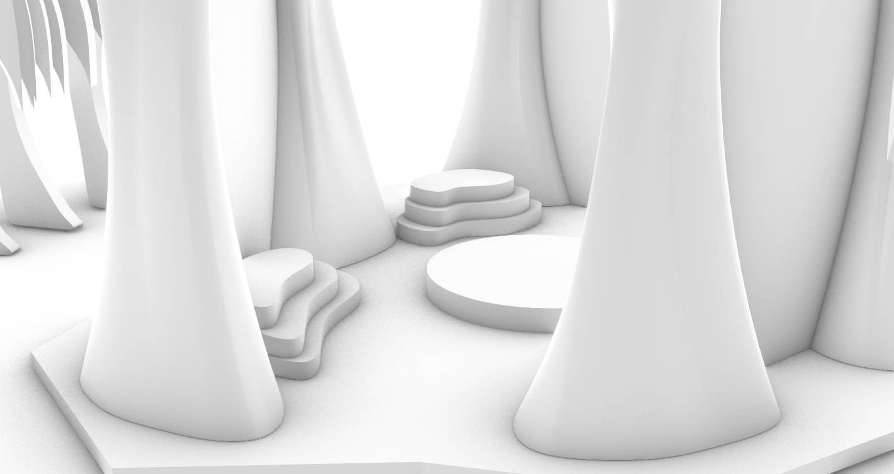
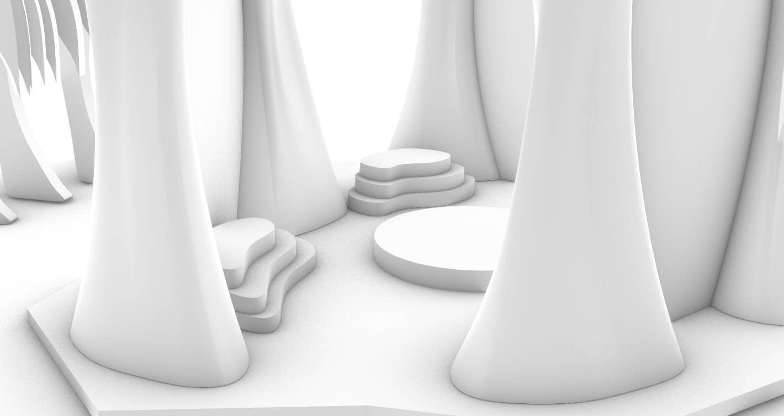

Problem and Objective
This project aims to design a space for musical events held in Holland Park. Currently, no place in
Holland Park can function as an event venue, and that is why we wanted to design a regular venue
there, making event planning easier and more affordable in Holland Park.
Key Design Decisions
- Locations, circulation, and Organic Shapes
First of all, we went on a field trip to Holland Park in Surrey to see the environment, including
lighting, pathway planings, intersection locations, and possible blockage like trees and city
facilities that are impossible to move. We chose the pathway intersections that can be accessed from
multiple directions and is 15 square feet empty without any blockages or city facilities. After
carefully noting the locations and making a scaled fabric top view mock, I analyzed all the possible
locations in written documents and their pros and cons. And I planned a centric circulation pattern
for this particular place to make sure the audiences could enter and exit freely into this pavilion.
Because this pavilion is primarily used for musical recitals in a park, we connected the idea of
music with trees. Regardless of its forms, classical music will last very long, documenting lives
and histories. Trees are also long-lasting, and they are the testimonies of time. Pavilion with
organic shapes also fits perfectly into the part environment.
- Modelling and Texturing in Rhino and TwinMotion.
After finalizing the ideation based on massive discussions, I built this model in
Rhino, representing our ideas in a detailed digital form. And then export the model files into
TwinMotion to add textures for this digital model and create essential environment elements in
Holland Park, including trees that exist in reality. After planning the camera movement in
TwinMotion, a final video version of this model was generated. There were a lot of techinical
difficulties during the process of making this model, and I spent massive time finding tutorials and
testing in Rhino to make a closed polysurface with minimal surfaces because surfaces and curves do
not work well in Grasshopper to generate a clean X axis and Y axis structure diagram. This pavilion
and pergola combination will be an asset in Holland Park, as this could be a regular event venue.


 
